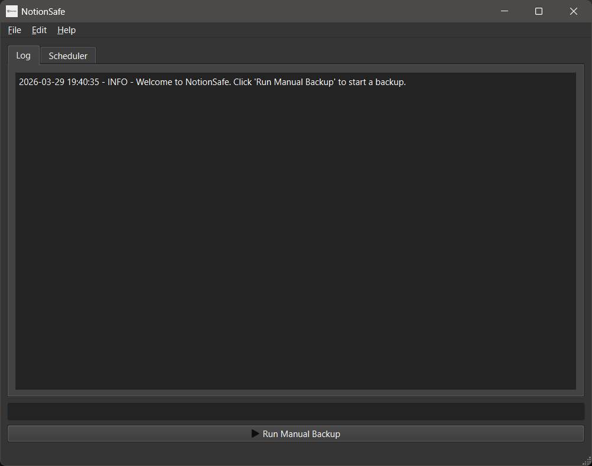
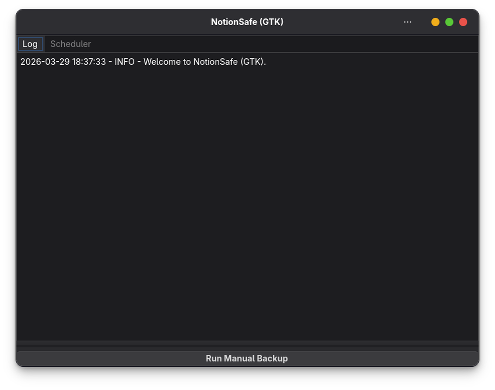
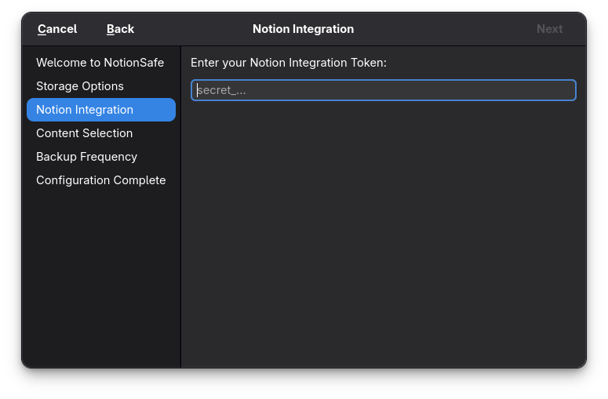
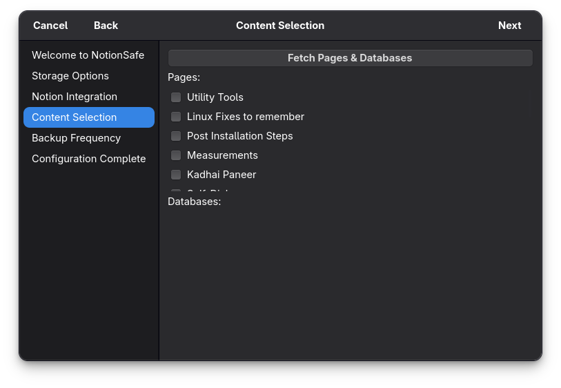
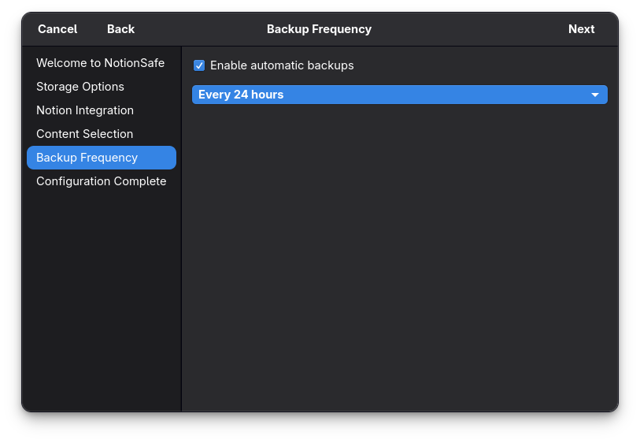

Your Notion, Offline & Secure.
NotionSafe is a cross-platform desktop app that creates versioned local backups of your Notion workspaces. Simple, automatic, and secure.


Cloud is not enough.
Notion is an incredible tool, but it's cloud-first. Without local backups, you risk losing access to your data when you're offline or if something goes wrong with the cloud.
Your notes are important.
Whether it's your personal journal or a business wiki, your data is valuable. NotionSafe treats it with the respect it deserves.
Offline access matters.
Keep a local copy of your entire workspace so you can search and reference your notes even without an internet connection.
Peace of mind.
Automatic, versioned backups mean you can always go back in time. No more "where did that page go?" moments.
Built for reliability.
Automatic Backups
OS-native scheduled tasks (systemd on Linux, Task Scheduler on Windows) keep your backups running silently in the background.
Secure Token Storage
Uses your system's native keyring to store your Notion API tokens safely. No plain-text secrets.
Git Integration
Optional Git-based backup system provides a full history of your changes. See exactly what changed and when.
Config Wizard
A simple, step-by-step setup process helps you connect Notion and choose your backup preferences in minutes.
Windows & Linux
Native look and feel on both operating systems, using PySide6 for Windows and GTK4 for Linux.
Open Source
Transparent code, no telemetry, and full control over your data. Just how a developer tool should be.
Setup in three simple steps.
1. Connect Notion
Enter your Notion API token. NotionSafe verifies it instantly and stores it securely in your system's keyring.

2. Choose Your Content
Select which pages or databases you want to backup, or just backup your entire workspace.

3. Set and Forget
Choose your backup frequency and destination. NotionSafe handles the rest, running silently in the background.
